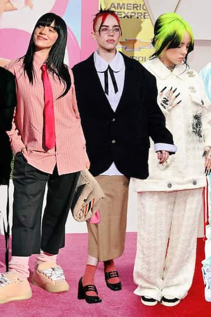

About the Artist
Billie Eilish is a singer-songwriter who became famous when she debuted her single "Ocean Eyes." She grew up in Los Angeles, California and makes music with her brother, Finneas O'Connell. Billie Eilish is known for her one-of-a-kind music, whispery vocals, and a unique sense of clothing style.
Music Style
Billie Eilish's music blends pop, indie, and alternative genres. Her music themes are often dark and introspective. Billie Eilish's collaborations with her brother Finneas have aided in her shaping a very unique sound
Accomplishments
Awards List
- 9 Grammy Awards
- 2 Academy Awards (Oscars)
- 6 MTV VIdeo Music Awards
- 3 Billboard Music Awards
- 2 Golden Globe Awards
- 2 People's Choice Awards
Outside of Billie Eilish's Awards, she has also been recognized for her environmental activism and mental health awareness advocacy.
Fashion Style
Billie Eilish has a distinct fashion style. The clothes she wears are often oversized and androgynous. Her style challenges traditional norms in the music industry and promotes body positivity.
